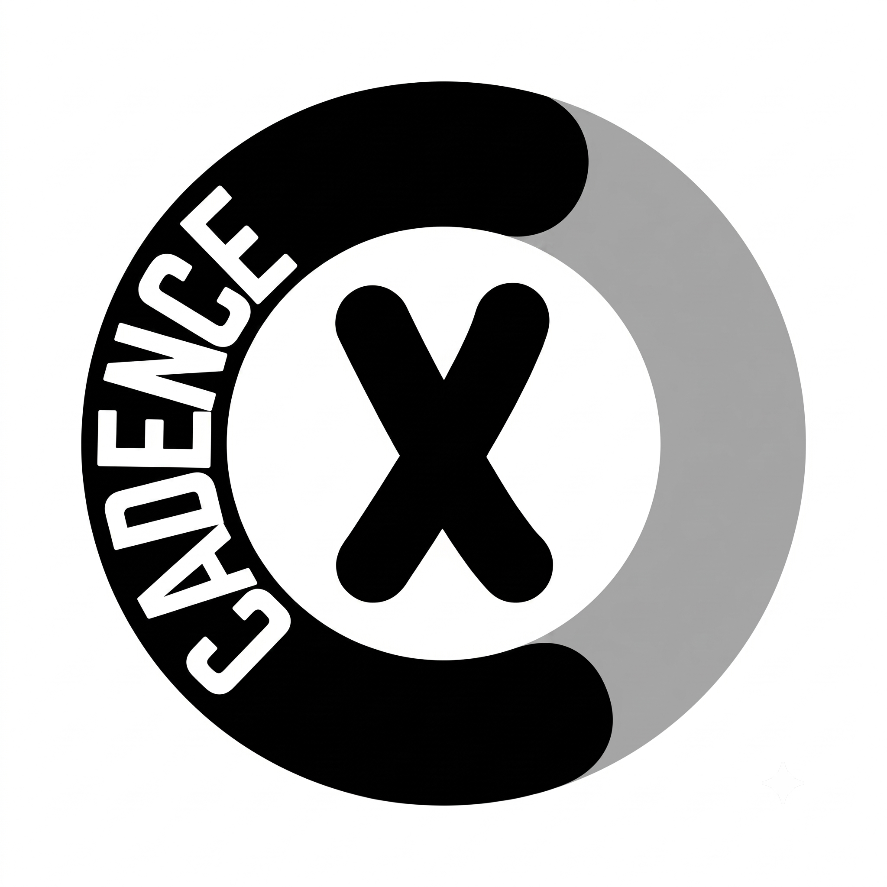

Cadence XA plain-language explanation of how this app stores your roadmap — written so you can decide what's safe to type in.
Nothing leaves your computer unless you explicitly choose to share or publish it. By default this app keeps your roadmap in your browser's local storage only — no account, no server, no sign-in. The only ways any data ever leaves your device are the Share link and the Cloud save/publish feature, both of which require you to click a button first.
In your browser's local storage — a small private storage area that every website gets, tied to this exact browser on this exact device.
roadmap-data.?scope=name), it's saved separately under roadmap-data-name so it never overwrites your main board.Yes. Local storage is not synced between devices or browsers — it doesn't even follow you if you switch from Chrome to Edge on the same computer. Your roadmap on your work laptop and your roadmap on your home computer are two entirely separate copies unless you deliberately move data between them (via Backup JSON, Share link, or Cloud).
Nothing changes — local storage persists across restarts and browser closes indefinitely. It only disappears if:
If any of those apply to you, use Backup JSON (in the Actions menu) to save a copy you control.
No. Your entire board (columns, teams, items) is compressed and encoded directly into the link itself, after #share=. No server is involved in generating it — it's built in your browser.
The data only "exists" wherever you paste that link. If you never send it to anyone, it never leaves your machine. If you paste it into Slack or email, the data travels exactly as far as that link does — and only that far.
This is the one feature that stores data on a server (Supabase, a hosted database) rather than only in your browser — but only for roadmaps you explicitly choose to save there. Nothing is sent to the cloud until you click Cloud.
There is no login and no user account. Instead, each cloud roadmap gets:
Ownership isn't tied to "you" as a person — it's tied to whoever holds that secret key. Your browser keeps a local list of your own cloud roadmaps (their ids + keys) so you can find them again; that list itself lives in local storage, same as everything else.
Cloud roadmaps keep two copies on the server:
So colleagues with a view link never see half-finished edits — they see whatever you last published.
Just the roadmap content itself — title, columns, teams, and items, as plain data. No account details, no email address, no tracking, no login credentials — there's nothing to enter, because there's no account.
These save a file to your own computer's downloads folder (or read one back in) — the same as saving a Word document. The app doesn't upload these files anywhere; they only exist wherever you choose to keep them afterwards.
| Action | Where the data goes | Leaves this device? |
|---|---|---|
| Normal editing | Browser local storage | No |
| Backup JSON / Export CSV | A file you save yourself | Only if you send that file |
| Share as URL | Encoded inside the link you generate | Only if you send that link |
| Cloud (save) | Private "working copy" in Supabase, key-gated | Yes — opt-in, click required |
| Publish | Public "published copy" in Supabase, viewable by anyone with the id | Yes — opt-in, click required |
If you never click Share or Cloud, your roadmap lives only in this browser, on this device, and nowhere else. You're always in control of the moment anything leaves your machine.